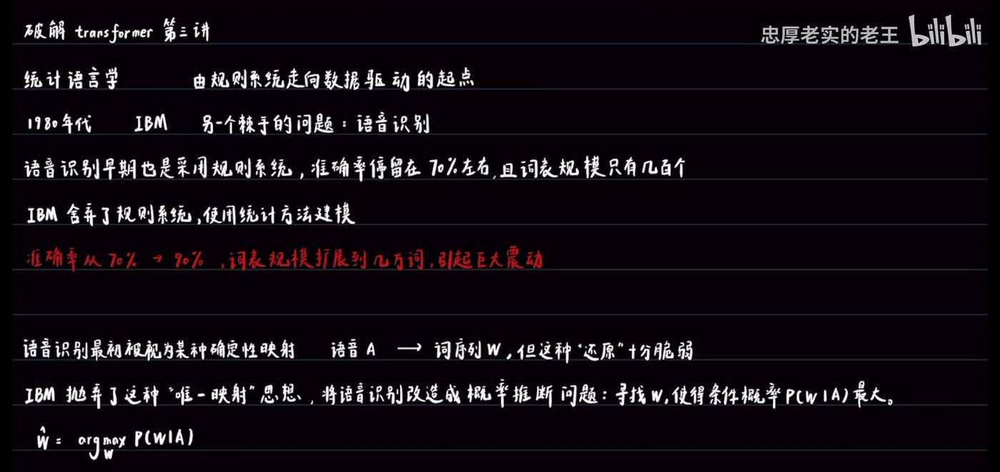
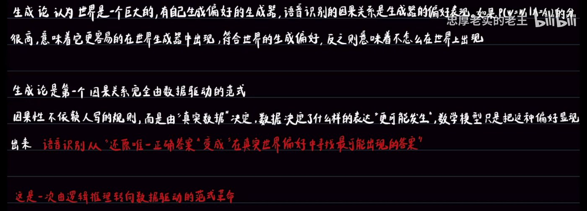
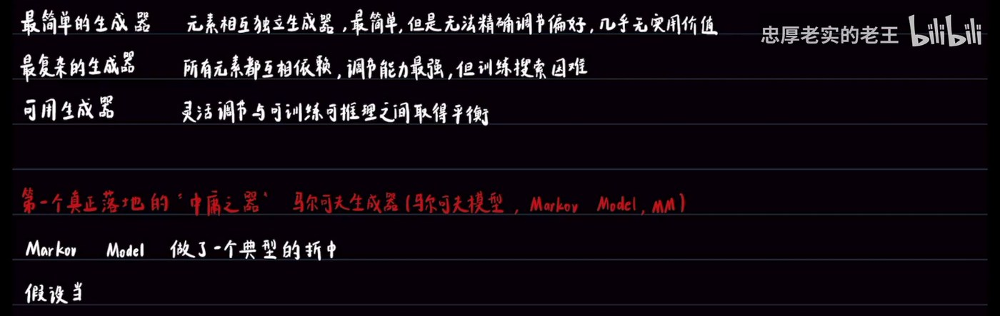

从还原论到生成论：一次由逻辑推理转向数据驱动的范式革命
本讲的核心思想转折
W* = argmax P(W|A)。这是第一个因果关系完全由数据驱动的范式。
建议先看视频，或对照下方笔记跳读
▶ 播放器无法加载时，可在 B 站直接观看。
一次准确率从 70% 大幅提升的历史转折
1980 年代，IBM 面对另一个棘手的问题：语音识别。
语音识别早期也是采用规则系统，但准确率停留在 70% 左右，且词表规模只有几百个。IBM 决定放弃规则系统，使用统计方法建模。
这次转变的核心是什么？
W* = argmax P(W|A)

从「符合/不符合」到「每个候选都有分数」
在概率视角下，语音识别抽象成「动态评分清单生成 + 搜索最高分」。
P(W|A) 是一个概率分布，给定一个具体的语音 A，P(W|A) 给出所有词序列 W₁, W₂, … 的概率。
规则系统也符合这个框架，只是评分极端：符合规则给最高分，不符合给零分。而在概率模型中，评分相对柔和。
判断因果关系的标准变了
UP 主用了一个例子来说明两种范式的差异：
I want to eat 分高，因为它符合语法；I to want eat 分低，因为它不符合语法。
背后思想：语言由复杂的规则系统演化，因果关系是「这句话是否符合规则」。
I want to eat 分高，因为它在真实语料中出现频繁；I to want eat 分低，因为几乎没人这么说。
背后思想：语言是生成器的产物，因果关系是「这句话在真实世界中出现的概率」。

因果性不依赖人写的规则，而由真实数据决定
生成论认为世界是一个巨大的、有自己生成偏好的生成器，语音识别的因果关系是生成器的偏好表现。
如果 P(W=Wᵢ | A=Aᵢ) 的分很高，意味着它更容易在世界生成器中出现，符合世界的生成偏好；反之则意味着不怎么在世界中出现。
语音识别从「还原唯一正确答案」变成「在真实世界偏好中寻找最可能出现的答案」。
生成器天然提供评分清单
UP 主构造了一个简单的生成器，假设有 2 个随机变量：
生成器的构造方式：
列出这个生成器所有可能的生成序列及其生成概率：
| L 的值 | B 的结果 | 生成的序列 | 生成概率 |
|---|---|---|---|
| L=0 | — | （空序列） | π₀ |
| L=1 | B=0 | 0 | π₁·θ |
| L=1 | B=1 | 1 | π₁·(1-θ) |
| L=2 | B=0,0 | 00 | π₂·θ² |
| L=2 | B=0,1 | 01 | π₂·θ(1-θ) |
| L=2 | B=1,0 | 10 | π₂·(1-θ)θ |
| L=2 | B=1,1 | 11 | π₂·(1-θ)² |
语音识别问题被重构：构造一个生成器，用真实数据训练它，使它拟合真实世界的生成偏好。训练好的模型自然地可以给序列打分，然后搜索出最高分的序列作为语音识别输出。
生成能力、可训练性、可搜索性
一个强大的拟合器有什么特点？
生成机制灵活，参数多，能表达丰富的偏好。
能从数据中学习参数，逼近真实世界的生成偏好。
训练好后，能快速搜索最高分的序列，用于实际任务。
在灵活调节与可训练可推理之间取得平衡
回顾简单生成器的问题：
每个元素相互独立的生成器，生成机制过于僵化，无法精细地控制一个特定序列的概率。
生成器的复杂度谱系：
| 类型 | 特点 | 问题 |
|---|---|---|
| 最简单的生成器 | 元素相互独立 | 无法精确调节偏好，几乎无实用价值 |
| 最复杂的生成器 | 所有元素都互相依赖 | 调节能力最强，但训练搜索困难 |
| 可用生成器 | 灵活调节与可训练可推理之间取得平衡 | — |
假设当前元素只依赖前一个元素
马尔可夫生成器（马尔可夫模型，Markov Model, MM）做了一个典型的折中：
用一个状态转移矩阵表达前后元素的依赖。

为后续讲解 Transformer 架构提供思想基础
本讲全部结论，可独立使用
| 问题 | 结论 |
|---|---|
| 本讲的历史起点？ | 1980 年代 IBM 语音识别：放弃规则系统，转向统计方法 |
| 转变的结果？ | 准确率从 70% 大幅提升，词表从几百扩展到几万 |
| 核心公式？ | W* = argmax P(W|A) —— 寻找使条件概率最大的词序列 |
| 概率评分清单的特点？ | 动态的（依赖输入 A）、柔和的（每个候选都有分数） |
| 还原论的核心观点？ | 语言是复杂的公理逻辑系统，句子是规则逻辑推演的结果 |
| 生成论的核心观点？ | 语言是表达意思的工具，由生成器在不同环境下生成 |
| 根本转折是什么？ | 从「符不符合规则」转变为「容不容易在真实世界中生成」 |
| 生成论的历史地位？ | 第一个因果关系完全由数据驱动的范式 |
| 生成器的本质？ | 能生成序列并为每个序列赋予概率分数的数学模型 |
| 关键联想？ | 如果生成器参数可调，就可以通过训练让生成器偏好逼近真实世界的偏好 |
| 强大拟合器的三个特点？ | ① 生成能力强 ② 可以高效训练 ③ 可以高效搜索/推理/评估 |
| 独立同分布的局限？ | 评分灵活性受限，调整参数会影响所有相同特征的序列 |
| 改进方向？ | 从独立分布 → 条件分布，引入上下文依赖 |
| 生成器的复杂度谱系？ | 最简单（独立）→ 最复杂（全依赖）→ 可用（平衡） |
| 马尔可夫模型的折中？ | 假设当前元素只依赖前一个元素 |
| 马尔可夫模型的历史地位？ | 第一个真正落地的「中庸之器」，在语音识别早期被广泛使用 |
本讲出现的关键概念
| 术语 | 说明 |
|---|---|
| 还原论 (Reductionism) | 语言是复杂的公理逻辑系统，句子是规则逻辑推演的结果。判断标准是「符不符合规则」。 |
| 生成论 (Generativism) | 语言是表达意思的工具，由生成器在不同环境下生成。判断标准是「容不容易在真实世界中生成」。 |
| 概率推断 | 将语音识别改造为寻找 W* = argmax P(W|A) 的概率推断问题。 |
| 概率评分清单 | 对所有候选序列生成概率分数，是动态的（依赖输入 A）、柔和的（每个候选都有分数）。 |
| 数据驱动 | 因果关系不依赖人写规则，而由真实数据决定。生成论是第一个数据驱动范式。 |
| 生成器 (Generator) | 能生成序列并为每个序列赋予概率分数的数学模型。相当于「世界生成器」的近似。 |
| 独立同分布 (i.i.d.) | 最简单的生成机制，元素相互独立。评分灵活性受限，调整参数会影响所有相同特征的序列。 |
| 条件分布 | 当前元素的生成依赖前面元素（上下文依赖）。P(Xₜ) → P(Xₜ | X₁=x₁, …, Xₜ₋₁=xₜ₋₁)。 |
| 马尔可夫模型 (Markov Model) | 假设当前元素只依赖前一个元素，用状态转移矩阵表达。第一个真正落地的「中庸之器」。 |
| 拟合器 | 通过训练让生成器偏好逼近真实世界偏好的模型。 |
| 范式革命 | 从逻辑推理转向数据驱动的范式转变。1980 年代 IBM 语音识别是标志性事件。 |
| 中庸之器 | 在灵活调节与可训练可推理之间取得平衡的生成器。马尔可夫模型是第一个落地的中庸之器。 |
当前是第 3 讲